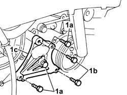
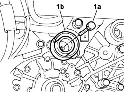
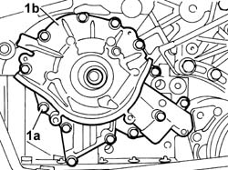
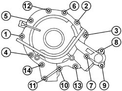
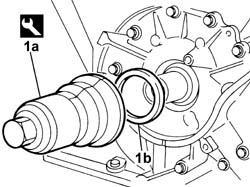
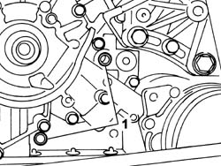

1020D10 FRONT CRANK SHAFT OIL SEAL COVER - R + R AND REPLACE SEALS WITH TIMING BELT REMOVED
- Path
- Procedures > 10 ENGINE > 1020 CRANKCASE SUMP AND COVERS > 1020D OIL SEALS ON CRANKSHAFT > 1020D10 FRONT CRANK SHAFT OIL SEAL COVER - R + R AND REPLACE SEALS WITH TIMING BELT REMOVED
- Kind
- repair procedure (removal / refitting; the operation number is the code)
- Applies to
- engines: 3.0 24V V6, 2.2 16V JTD; all production periods
- Interactive page
- https://sloeber94.github.io/elrnDB-fUlss/en/#/179006899
Applies to: engines: 3.0 24V V6; all production periods
 Removing
Removing
 Refitting
RefittingSee in Op. 1032B44
1. . Undo the fixing bolts (1a) and (1b), then remove the air conditioning compressor mounting bracket (1c).

Applies to: engines: 3.0 24V V6; all production periods
1. Undo the fixing bolt (1a) and remove the fixed timing belt tensioner (1b).

Applies to: engines: 3.0 24V V6; all production periods
1. Undo the fixing bolts (1a) and remove the front cover (1b).

Applies to: engines: 3.0 24V V6; all production periods
Refitting
Removing- Remove the oil sealing ring from its seat on the front cover.
 | Value - daNm | Fastening | Component | Ø |
|---|---|---|---|---|
. | 0.5 | Bolts | ENGINE OIL SEAL FRONT COVER | - |
- Position the front cover and fully tighten the fixing bolts by hand.
- Pre-tighten the fixing bolts to the recommended torque, following the order illustrated in the diagram below.
- Tighten the fixing bolts, following the order illustrated, until all the bolts are at the recommended torque.
| Value - daNm | Fastening | Component | Ø |
|---|---|---|---|---|
. | 0.8 | Bolts | ENGINE OIL SEAL FRONT COVER | - |
- Resume the tightening of the fixing bolts, following the order illustrated, until all the bolts are at the recommended torque.
| Value - daNm | Fastening | Component | Ø |
|---|---|---|---|---|
. | 0.8 | Bolts | ENGINE OIL SEAL FRONT COVER | - |

Applies to: engines: 3.0 24V V6; all production periods
1. Refit a new oil seal (1b) on the crankshaft front cover using the tool (1a).
 | Description | Code | Function |
|---|---|---|---|
1a | Fitting tool | 1.870.900.100 | Engine oil front cover oil seal |

Applies to: engines: 3.0 24V V6; all production periods
1. Check that the locating dowels are fitted on the engine block.

Applies to: engines: 3.0 24V V6; all production periods
- Position the air conditioning compressor mounting bracket and tighten the fixing bolts to the recommended torque.
| Value - daNm | Fastening | Component | Ø |
|---|---|---|---|---|
. | 0.8 | Bolt | AIR CONDITIONING COMPRESSOR MOUNTING BRACKET AIR | - |
- Place the tensioner roller in position and tighten the fixing bolt to the recommended torque
| Value - daNm | Fastening | Component | Ø |
|---|---|---|---|---|
. | 0.8 | Bolt | TIMING DRIVE BELT FIXED TENSIONER (ONE) - R.R. | - |
See in Op. 1032B44